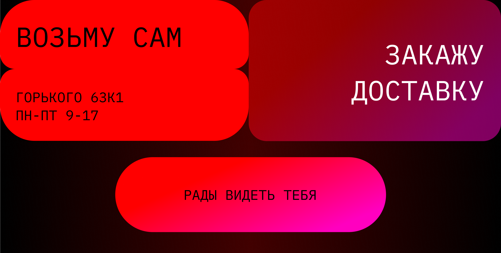
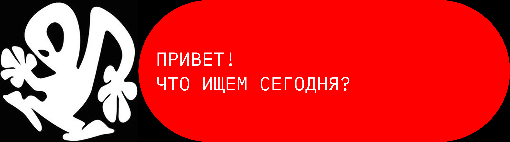
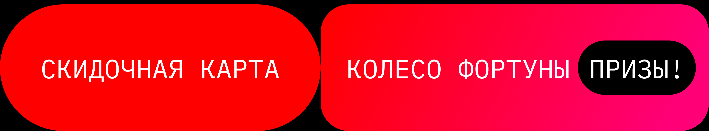
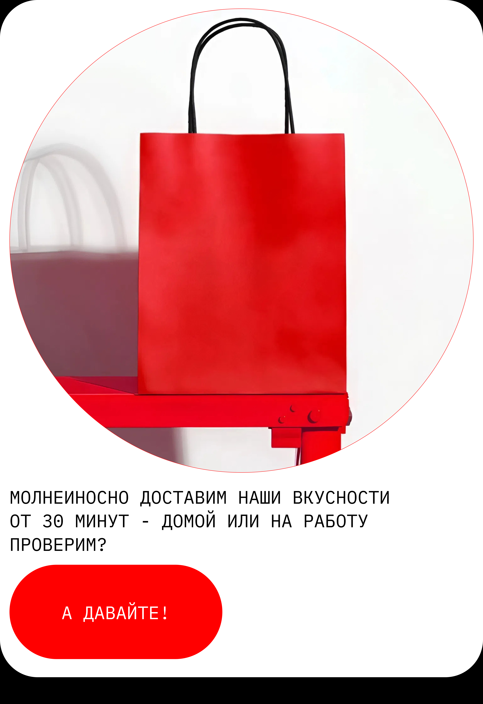

<html lang="ru">
<head>
    <meta charset="UTF-8">
    <meta name="viewport" content="width=device-width, initial-scale=1.0">
    <meta name="viewport" content="width=device-width, initial-scale=1.0, maximum-scale=1.0, user-scalable=no">
    <title>5 изображений</title>
    <script>
        if (!localStorage.getItem('hasSeenWelcome')) {
@@ -15,75 +15,69 @@
            padding: 0;
            box-sizing: border-box;
            -webkit-tap-highlight-color: transparent;
            -webkit-touch-callout: none;
        }

        body {
            background: #000;
            overflow-x: hidden;
            min-height: 100vh;
            background: #000;
        }

        .preloader {
            position: fixed;
            top: 0;
            left: 0;
            width: 100%;
            height: 100%;
            width: 100vw;
            height: 100vh;
            background: #000;
            display: flex;
            align-items: center;
            justify-content: center;
            z-index: 1000;
            opacity: 0;
            transition: opacity 0.5s ease;
        }

        .preloader.active {
            opacity: 1;
        }
        
        .preloader.hidden {
            opacity: 0;
            pointer-events: none;
        }

        .video-loader {
            position: absolute;
            top: 0;
            left: 0;
            width: 100%;
            height: 100%;
            overflow: hidden;
        }
        
        .video-loader video {
            width: 100%;
            height: 100%;
            object-fit: cover;
        }
        
        /* Скрываем элементы управления видео */
        .video-loader video {
            -webkit-media-controls: none;
            pointer-events: none;
        .loader-gif {
            width: 80px;
            height: 80px;
        }

        .image-container {
            width: 100%;
            width: 100vw;
            background: #000;
            opacity: 0;
            transition: opacity 0.8s ease;
            transform: translateY(30px);
            transition: opacity 0.8s ease, transform 0.8s ease;
        }

        .image-container.loaded {
            opacity: 1;
            transform: translateY(0);
        }

        .image-container img {
        .image-container img,
        .image-container video {
            width: 100%;
            height: auto;
            display: block;
            cursor: pointer;
            transition: transform 0.2s cubic-bezier(0.34, 1.56, 0.64, 1);
            object-fit: cover;
        }
        
        .video-wrapper {
            position: relative;
            width: 100%;
            height: auto;
        }
        
        .video-wrapper:active video {
            transform: translateY(4px) scale(0.98);
        }

        #wy-image:active {
@@ -98,128 +92,172 @@
            transform: translateY(4px) scale(0.98);
        }

        #third-image:active {
            transform: translateY(4px) scale(0.98);
        /* Скрываем все элементы управления видео */
        video::-webkit-media-controls {
            display: none !important;
        }
        
        video::-webkit-media-controls-enclosure {
            display: none !important;
        }
        
        video::-webkit-media-controls-panel {
            display: none !important;
        }
        
        video::-webkit-media-controls-play-button {
            display: none !important;
        }
        
        video::-webkit-media-controls-timeline {
            display: none !important;
        }
        
        video::-webkit-media-controls-current-time-display {
            display: none !important;
        }
        
        video::-webkit-media-controls-time-remaining-display {
            display: none !important;
        }
        
        video::-webkit-media-controls-timeline-container {
            display: none !important;
        }
        
        video::-webkit-media-controls-volume-slider {
            display: none !important;
        }
        
        video::-webkit-media-controls-mute-button {
            display: none !important;
        }
        
        video::-webkit-media-controls-toggle-closed-captions-button {
            display: none !important;
        }
        
        video::-webkit-media-controls-fullscreen-button {
            display: none !important;
        }
        
        /* Для Firefox */
        video::-moz-media-controls {
            display: none !important;
        }
        
        /* Для всех браузеров */
        video {
            -webkit-media-controls: none;
            -moz-media-controls: none;
            -ms-media-controls: none;
            media-controls: none;
            pointer-events: none;
        }
        
        .video-overlay {
            position: absolute;
            top: 0;
            left: 0;
            width: 100%;
            height: 100%;
            cursor: pointer;
            z-index: 2;
        }
    </style>
</head>
<body>
    <!-- Видео-прелоадер -->
    <!-- Прелоадер -->
    <div class="preloader" id="preloader">
        <div class="video-loader">
            <video id="gradientVideo" muted loop playsinline preload="auto">
                <source src="gradient-loop.mp4" type="video/mp4">
            </video>
        </div>
        
    </div>

    <!-- Основной контент -->
    <div class="image-container" id="imageContainer">
        
        
        
        
        
        <!-- Видео вместо изображения 3 -->
        <div class="video-wrapper" onclick="checkBpageAccess()">
            <video id="fo-video" muted loop playsinline preload="auto" autoplay>
                <source src="fo.mp4" type="video/mp4">
                Ваш браузер не поддерживает видео.
            </video>
            <div class="video-overlay"></div>
        </div>
        
        
        
    </div>

    <script>
        // ПРОСТОЙ ЗАПУСК ПРЕЛОАДЕРА
        // Ждем загрузки всех изображений и видео
        window.addEventListener('load', function() {
            const preloader = document.getElementById('preloader');
            const gradientVideo = document.getElementById('gradientVideo');
            
            // Показываем прелоадер
            setTimeout(() => {
                preloader.classList.add('active');
            }, 10);
            
            // ПРОСТОЙ ЗАПУСК ВИДЕО
            function startVideo() {
                gradientVideo.play()
                    .then(() => {
                        console.log("Gradient видео запущено");
                        // Ждем 2 секунды и загружаем контент
                        setTimeout(startContentLoading, 2000);
                    })
                    .catch(error => {
                        console.log("Не удалось запустить gradient видео:", error);
                        // Все равно загружаем контент через 1 секунду
                        setTimeout(startContentLoading, 1000);
                    });
            }
            
            // Пробуем запустить видео
            if (gradientVideo.readyState >= 3) {
                // Видео уже загружено
                startVideo();
            } else {
                // Ждем загрузки видео
                gradientVideo.addEventListener('loadeddata', startVideo);
                gradientVideo.addEventListener('canplay', startVideo);
                
                // На всякий случай таймаут
                setTimeout(startVideo, 1000);
            }
            
            // Гарантированный запуск через 3 секунды
            setTimeout(startContentLoading, 3000);
        });
        
        function startContentLoading() {
            const images = document.querySelectorAll('.image-container img');
            const totalImages = images.length;
            let loadedImages = 0;
            const video = document.getElementById('fo-video');
            const totalMedia = images.length + 1; // изображения + видео
            let loadedMedia = 0;
            const preloader = document.getElementById('preloader');
            const imageContainer = document.getElementById('imageContainer');

            function imageLoaded() {
                loadedImages++;
                if (loadedImages === totalImages) {
                    // Все изображения загружены
                    setTimeout(() => {
                        preloader.classList.remove('active');
            function mediaLoaded() {
                loadedMedia++;
                if (loadedMedia === totalMedia) {
                    setTimeout(function() {
                        preloader.classList.add('hidden');
                        
                        setTimeout(() => {
                            imageContainer.classList.add('loaded');
                        }, 300);
                    }, 500);
                        imageContainer.classList.add('loaded');
                    }, 300);
                }
            }

            // Проверяем загрузку изображений
            images.forEach(img => {
                if (img.complete) {
                    imageLoaded();
                    mediaLoaded();
                } else {
                    img.addEventListener('load', imageLoaded);
                    img.addEventListener('error', imageLoaded);
                    img.addEventListener('load', mediaLoaded);
                    img.addEventListener('error', mediaLoaded);
                }
            });

            // Если все уже загружено
            if (loadedImages === totalImages) {
                setTimeout(() => {
                    preloader.classList.remove('active');
                    preloader.classList.add('hidden');
                    setTimeout(() => {
                        imageContainer.classList.add('loaded');
                    }, 300);
                }, 500);
            // Проверяем загрузку видео
            if (video.readyState >= 3) { // HAVE_FUTURE_DATA или больше
                mediaLoaded();
            } else {
                video.addEventListener('canplaythrough', mediaLoaded);
                video.addEventListener('error', mediaLoaded);
                
                // На всякий случай, если видео не загрузится
                setTimeout(mediaLoaded, 3000);
            }
            
            // Гарантированное скрытие через 4 секунды
            setTimeout(() => {
                if (!preloader.classList.contains('hidden')) {
                    preloader.classList.remove('active');

            // Запускаем видео
            video.play().catch(function(error) {
                console.log("Автозапуск видео заблокирован:", error);
                // Показываем контент даже если видео не запустилось
                if (loadedMedia < totalMedia) {
                    mediaLoaded();
                }
            });

            if (loadedMedia === totalMedia) {
                setTimeout(function() {
                    preloader.classList.add('hidden');
                    imageContainer.classList.add('loaded');
                }
            }, 4000);
        }
                }, 300);
            }
        });

        // Функция проверки доступа к bpage.html
        function checkBpageAccess() {
            // Добавляем тактильную отдачу для видео
            const videoWrapper = document.querySelector('.video-wrapper');
            videoWrapper.style.transform = 'translateY(4px) scale(0.98)';
            setTimeout(() => {
                videoWrapper.style.transform = 'translateY(0) scale(1)';
            }, 200);
            
            const hasPassedSlider = localStorage.getItem('hasPassedSlider') === 'true';
            const hasTriedBpage = localStorage.getItem('hasTriedBpage') === 'true';

@@ -245,8 +283,8 @@
            }, 500);
        }

        // Простая тактильная отдача (без вибрации)
        ['wy-image', 'first-image', 'second-image', 'third-image'].forEach(id => {
        // Тактильная отдача для всех кликабельных картинок
        ['wy-image', 'first-image', 'second-image'].forEach(id => {
            const image = document.getElementById(id);
            if (image) {
                image.addEventListener('touchstart', function() {
@@ -256,22 +294,50 @@
                image.addEventListener('touchend', function() {
                    this.style.transform = 'translateY(0) scale(1)';
                });
                
                image.addEventListener('mousedown', function() {
                    this.style.transform = 'translateY(4px) scale(0.98)';
                });
                
                image.addEventListener('mouseup', function() {
                    this.style.transform = 'translateY(0) scale(1)';
                });
            }
        });

        // Предотвращаем контекстное меню для прелоадера
        document.getElementById('gradientVideo').addEventListener('contextmenu', function(e) {
        // Тактильная отдача для видео
        const videoWrapper = document.querySelector('.video-wrapper');
        videoWrapper.addEventListener('touchstart', function() {
            const video = this.querySelector('video');
            video.style.transform = 'translateY(4px) scale(0.98)';
        });
        
        videoWrapper.addEventListener('touchend', function() {
            const video = this.querySelector('video');
            video.style.transform = 'translateY(0) scale(1)';
        });

        // Предотвращаем контекстное меню для видео
        document.getElementById('fo-video').addEventListener('contextmenu', function(e) {
            e.preventDefault();
            return false;
        });

        // Предотвращаем стандартное управление видео
        document.addEventListener('keydown', function(e) {
            if (e.target.tagName === 'VIDEO') {
                e.preventDefault();
            }
        });

        // Перезапускаем видео если оно остановилось
        const videoElement = document.getElementById('fo-video');
        
        // Проверяем каждые 5 секунд, играет ли видео
        setInterval(function() {
            if (videoElement.paused && document.visibilityState === 'visible') {
                videoElement.play().catch(e => console.log("Видео не удалось перезапустить"));
            }
        }, 5000);

        // Перезапускаем видео когда страница становится видимой
        document.addEventListener('visibilitychange', function() {
            if (document.visibilityState === 'visible' && videoElement.paused) {
                videoElement.play().catch(e => console.log("Видео не удалось перезапустить"));
            }
        });
    </script>
</body>
</html>
